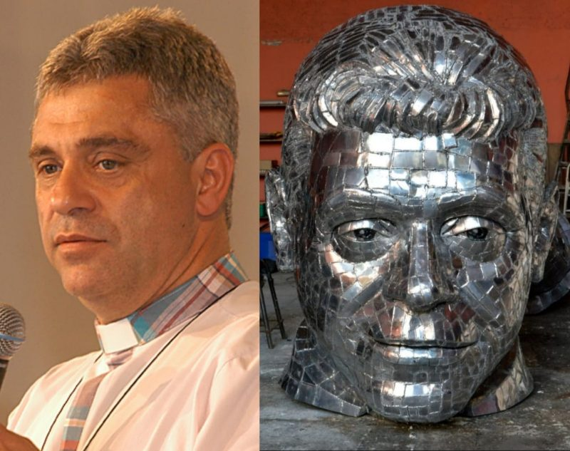
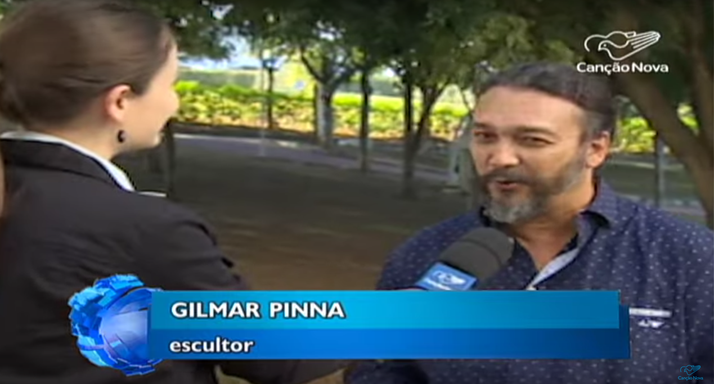
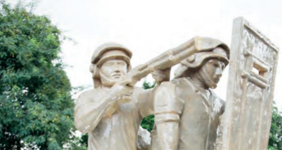

HOME
Veja abaixo algumas reportagens feitas com Gilmar Pinna:

Cachoeira Paulista terá estátua de
22 metros de padre em processo de
beatificação

Padre Léo ganhará uma estátua em
cidade do interior do estado de SP
Monumento em homenagem a PM é
apresentado no Parque Cecap

Gilmar Pinna entrega escultura
"Guardiões da Vida" ao 44 BPM